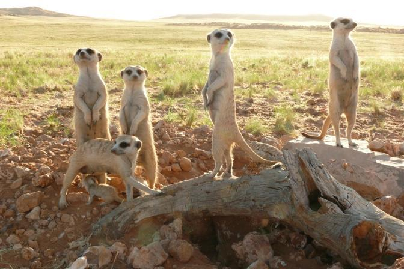

estes mamiferos costumam viver em savanas ou desertos nas zonas de:
Esses mamíferos habitam o continente africano, especificamente em áreas arenosas e desérticas. O suricato pode ser encontrado, especialmente no deserto de Kalahari, localizado em Botsuana. Além disso, eles também ocorrem nos desertos que cobrem a Namíbia. Na Namíbia, existe uma subespécie específica, o suricato do deserto, embora o suricato sul-africano também possa ser encontrado nessa área. Por sua vez, em Angola, há a última das três subespécies do suricato angolano. O suricato tem populações abundantes e não está em perigo de extinção. Seu principal perigo é o bem-estar daqueles que estão em cativeiro como animais de estimação. Afinal, suas exigências como espécie são muito altas e não podem ser atendidas em uma casa humana. De fato, ao contrário do que muitas pessoas pensam, os suricatos domesticados não existem, como ocorre com os furões.
